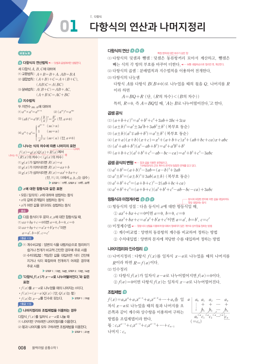
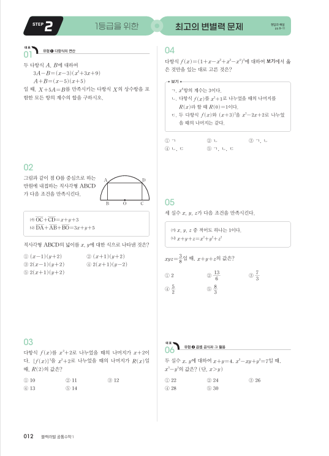
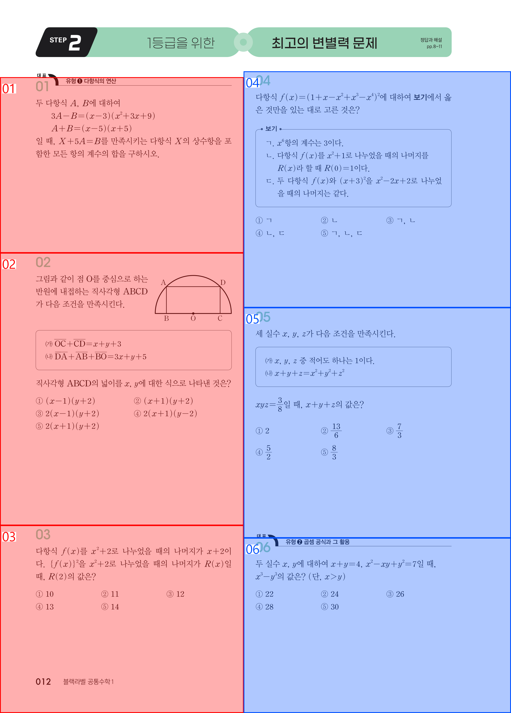
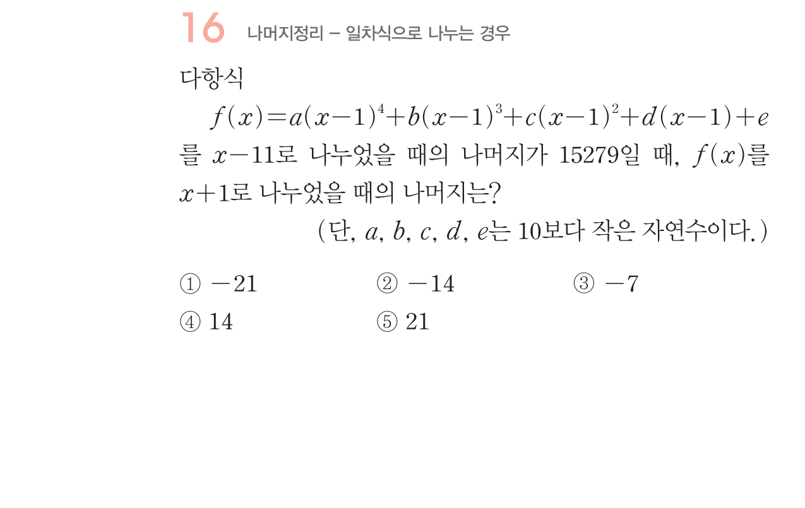
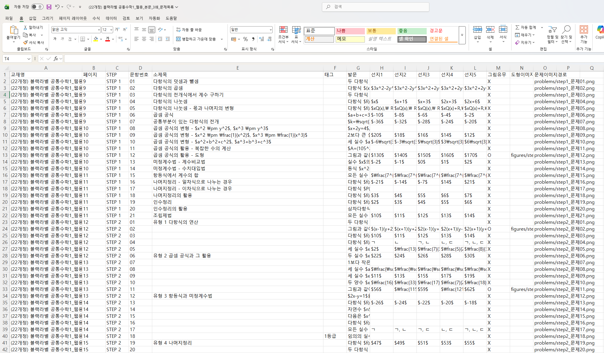

실습 교육 2 | 수학 교재 디지털화 작업¶
비개발자가 AI와 대화하며, 수학 문제집 PDF에서 문제를 한 장씩 잘라내고 엑셀로 정리하는 전 과정을 체험하는 실습 가이드입니다.
실습 1에서 가져오는 것
실습 1에서 이미 경험한 세 가지를 여기서 다시 씁니다:
- 관찰담: 내가 발견한 규칙을 AI에게 말로 설명하기
- 검증 루프: 결과 확인 → 피드백 → 수정 반복하기
- Skill화: 작업 과정을 재사용 가능하게 포장하기
다른 건 하나도 같지 않습니다. 데이터가 다르고, 도구가 다르고, 결과물이 다릅니다. 하지만 AI와 협업하는 방식은 똑같습니다.
업무 배경¶
프로젝트 배경
수학 교재를 디지털 문제 DB로 만드는 프로젝트가 있습니다. 요구사항은 이렇습니다:
- 블랙라벨 문제집 파일을 전산화
- 도형이나 그래프가 있는 건 이미지로 따로 저장
- 각 문제의 STEP, 문항번호, 소제목, 태그를 엑셀로 정리
ChatGPT한테 PDF 통째로 줘봤더니 19분 걸려서 결과를 냈지만, 문제를 통째로 빼먹거나 STEP을 잘못 분류하는 등 다양한 오류가 있었습니다.
원인은 간단합니다. AI한테 한꺼번에 너무 많은 걸 시켰기 때문입니다. PDF 한 권이 아니라, 한 문제씩 잘라서 던지면 정확도가 완전히 달라집니다. 그래서 이 실습의 핵심은:
"AI가 잘 소화할 수 있는 크기로 입력을 먼저 쪼개는 프로그램"을 만드는 것입니다.
AI는 이미지를 어떻게 볼까?¶
실습 1에서 AI에게 PDF를 줬더니 표를 읽어줬습니다. 실습 2에서는 한 단계 더 나갑니다: AI에게 사진을 보여주고 작업을 시킵니다.
여기서 알아두면 좋은 것:
AI에게 사진은 "픽셀의 격자"입니다. 사람은 사진을 보면 즉시 "아 여기 문제 번호가 있네"라고 인식하지만, AI에게 사진은 숫자(픽셀 값)의 나열일 뿐입니다.
그래서 우리가 해줄 일: AI가 문제를 찾으려면, 우리가 "문제 번호는 글자가 크다"같은 규칙(관찰담)을 알려줘야 합니다. 그러면 AI는 글자 크기를 숫자로 비교하는 코드를 만듭니다.
코드를 이해할 필요는 없습니다. 우리는 결과 사진(디버그 이미지)을 보고 "여기가 이상해"라고 말해주면 됩니다. 실습 1에서 한 것과 완전히 같은 방식입니다.
입력 자료: 수학 문제집 PDF¶
실습에서 다루는 입력 자료는 블랙라벨 수학 문제집 PDF입니다. 각 단원별로 문제가 나열되어 있으며, 문제마다 STEP 구분·문항 번호·도형/그래프 이미지 등이 포함되어 있습니다.


PDF의 주요 특징:
- 한 페이지에 여러 문제가 혼재
- STEP(필수예제, 유제, 연습문제 등) 구분이 시각적 레이아웃으로만 표현됨
- 도형·그래프·수식 이미지가 텍스트와 혼합
- 페이지마다 문제 시작/끝 경계가 명확하지 않음
PDF 한 권을 통째로 AI에게 던지고 문제를 추출하게 시키는 대신, 문제 단위로 먼저 쪼개서 정확도를 높이고 대용량의 처리를 가능하게 하는 것이 이번 실습의 핵심입니다. 또한 이를 원클릭 자동화 프로세스로 만들어 다른 책에도 활용할 수 있게 할 예정입니다.
목표 결과물¶
최종적으로 두 가지 결과물을 만듭니다:
① 문제별 이미지 파일 — 각 문제를 한 장씩 잘라낸 사진 (도형은 별도 추출)
② 엑셀 정리 파일 — STEP, 문항번호, 소제목, 태그 메타데이터



실습 전 준비¶
준비물
- AI 코딩 에이전트(Claude Code, Codex, Antigravity 등) 준비
- Python 설치 완료
- 실습 폴더 구조 확인
practice_2/
├── data/ ← PDF 문제집을 여기에 넣음
├── output/ ← 결과물이 저장될 폴더
├── AGENTS.md ← AI가 자동으로 읽는 작업 지침서
└── CLAUDE.md ← Claude Code용 안내 파일
AGENTS.md가 뭐예요?
AI 코딩 에이전트가 프로젝트 폴더를 열 때 자동으로 읽는 "작업 지침서"입니다. "사용자는 비개발자다", "매 단계 끝에 5줄로 보고해라" 같은 규칙이 적혀 있어서 AI가 알아서 따릅니다.
지금 뭘 하는 건가요? (한눈에 보기)¶
실습의 큰 그림
"수학 문제집 PDF를 문제별 이미지 + 엑셀 메타데이터로 전산화하는 작업" 을 AI와 함께 자동화하고, 그 자동화 과정을 한 번 더 쓸 수 있는 Skill로 포장하는 것이 이 실습의 전부입니다.
flowchart LR
subgraph INPUT["📥 전산화할 원본"]
PDF["수학 문제집 PDF<br/>(블랙라벨)"]
end
subgraph WORK["🤖 이번 실습: 단계별로 쪼개기"]
direction TB
S0["Stage 0<br/>AI에게 상황 설명<br/><i>AGENTS.md 로 규칙 고정</i>"]
S1["Stage 1<br/>페이지 → 사진<br/><i>문제 페이지만 골라낸다</i>"]
S2["Stage 2<br/>문제 단위로 자르기<br/><i>글자 크기로 번호 찾고 크롭</i>"]
S3["Stage 3<br/>사람 확인 + 엑셀<br/><i>문제 텍스트·STEP·태그 정리</i>"]
S0 --> S1 --> S2 --> S3
end
subgraph OUT["📦 최종 산출물 (Stage 4)"]
IMG["문제별 PNG + 도형 이미지"]
XLSX["정리된 Excel"]
SK["<b>Skill 2개</b><br/>/문제추출 · /문제파싱<br/><br/>→ 다른 교재에도<br/>한 마디로 재사용"]
end
INPUT --> WORK --> OUTStage별 로드맵¶
| Stage | 무엇을 하나 | 핵심 질문 | 예상 시간 |
|---|---|---|---|
| 0 | AI에게 프로젝트 배경과 작업 방식을 설명합니다 | AI가 내 의도를 이해했나? | 5분 |
| 1 | PDF를 페이지별 사진으로 만들고, 진짜 문제 페이지만 골라냅니다 | 문제 페이지가 정확히 걸러졌나? | 15분 |
| 2 | 문제 영역을 찾아 잘라내고, 디버그 사진과 도형 추출까지 합니다 | 각 문제가 정확히 한 장씩 잘렸나? | 20분 |
| 2b | 도형이 있는 문제에서 도형만 따로 잘라 저장합니다 (선택) | 도형이 정확히 잘렸나? | 15분 |
| 3 | 잘라낸 문제를 텍스트로 읽어서 엑셀에 정리합니다 | 문제 텍스트와 메타데이터가 맞나? | 20분 |
| 4 | 지금까지의 과정을 Skill로 만들어 재사용 가능하게 포장합니다 | 다른 교재에도 다시 쓸 수 있는가? | 15분 |
최종 산출물¶
output/
└─ 책이름/
├─ pages/ ← Stage 1 결과 (페이지별 사진)
├─ problems/ ← Stage 2 결과 (문제별 사진)
├─ figures/ ← Stage 2 결과 (도형 이미지)
├─ debug/ ← Stage 2 결과 (확인용 디버그 사진)
├─ report.txt ← Stage 1 결과 (페이지 판정 리포트)
└─ 책이름_export.xlsx ← Stage 3 결과 (최종 엑셀)